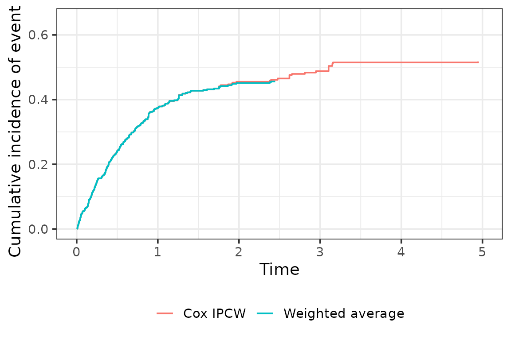
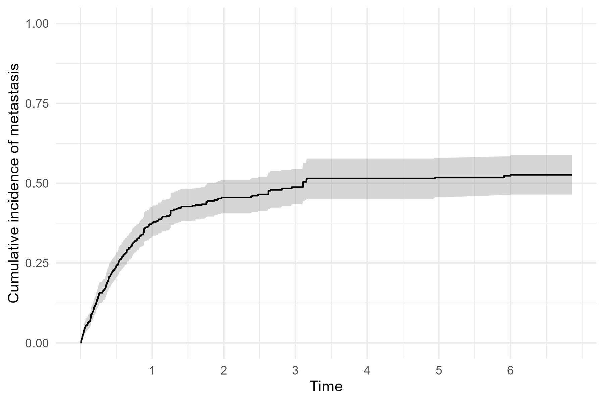

Competing Risks IPCW: Guided Example
Source:vignettes/competing-risks-guided-example.Rmd
competing-risks-guided-example.RmdThis vignette demonstrates IPCW methods for competing risks data. We use a simulated dataset in line with an observational clinical setting where participants are followed for metastasis after undergoing radical prostatectomy. We consider metastasis and death to be competing events. We wish to understand how patterns of metastasis vary by the level of prostate specific antigen (PSA) measured immediately after surgery (referred to as baseline PSA). Participants are censored when they stop attending follow-up visits at the cancer center where they had their prostatectomy and resume visiting their primary care doctor. Dependent censoring arises because participants with a higher baseline PSA are less likely to be censored and more likely to experience metastasis.
Simulate data and compute IPCW weights
First, create a simulated dataset of n=500 patients
using the sim_data_cr() function. We use baseline-dependent
censoring so that censoring is informative, and keep other parameters
besides n at the default values:
set.seed(9843)
dat <-
sim_data_cr(
n = 500,
censoring = "baseline",
beta1 = log(1.5),
beta2 = log(2.25),
beta3 = log(3.4),
p = 0.3
)Key columns in the simulated data include:
-
z1: baseline PSA quartile (0 = lowest, 3 = highest) -
delta: event indicator (1 = metastasis, 2 = death, 0 = censored) -
t: observed time (event or censoring)
wide_to_long_cr() converts the data to long format,
which is required for IPCW estimation. The
add_ipcw_weights_cr() function computes IPCW weights for
competing risks data. The strat argument specifies whether
to use stratified (non-parametric) weights (when
strat = "yes") or Cox model weights (when
strat = "no").
dat_long <- wide_to_long_cr(dat)
# Cox model weights
dat_long_cox <- add_ipcw_weights_cr(dat_long, strat = "no")
# Stratified (non-parametric) weights
dat_long_strat <- add_ipcw_weights_cr(dat_long, strat = "yes")IPCW cumulative incidence curves
# Get an ordered vector of times
esttimes <- sort(dat$t)
# Estimate cumulative incidence using the stratified (non-parametric) IPCW
ci_strat <- cuminc_waverage_cr(dat, esttimes)
# Estimate cumulative incidence using the Cox model IPCW
ci_cox <- cuminc_ipcw_cr(dat_long_cox, esttimes)
# Combine the two sets of weights for plotting
to_plot <-
rbind(
data.frame(time = esttimes, est = ci_strat, method = "Weighted average"),
data.frame(time = esttimes, est = ci_cox, method = "Cox IPCW")
)
ggplot(to_plot, aes(x = time, y = est,
color = method, linetype = method, linewidth = method)) +
geom_step() +
scale_color_manual(values = c("#f08122", "#5c2161")) +
scale_linetype_manual(values = c("solid", "dashed")) +
scale_linewidth_manual(values = c(0.8, 1.1)) +
xlim(0, 5) +
ylim(0, 1) +
labs(
x = "Time",
y = "Cumulative incidence of metastasis"
) +
theme_bw() +
theme(
legend.position = "bottom",
legend.title = element_blank()
)
#> Warning: Removed 52 rows containing missing values or values outside the scale range
#> (`geom_step()`).
The two sets of weights result in nearly identical weighted cumulative incidence curves in this example.
Fine-Gray regression
Next, estimate the subdistribution hazard ratio (SHR) for the association between baseline PSA and metastasis, accounting for the competing risk of death and dependent censoring.
The fg_split_cr() function splits the data into
event-specific datasets, and the add_fg_weights_cr()
function computes weights for Fine-Gray regression. The
fg_weighted_cr() function fits a weighted Fine-Gray
model.
# Split the data into event-specific datasets for Fine-Gray regression
dat_long_fg <- fg_split_cr(dat_long)
# Stratified weights
dat_long_fg_strat <- add_fg_weights_cr(dat_long_fg, strat = "yes")
fg_strat <- fg_weighted_cr(dat_long_fg_strat, extend = FALSE)
exp(fg_strat[, 1]) # exponentiated coefficients
#> z11 z12 z13
#> 1.707717 2.529884 3.168057
# Cox model weights
dat_long_fg_cox <- add_fg_weights_cr(dat_long_fg, strat = "no")
fg_cox <- fg_weighted_cr(dat_long_fg_cox)
exp(fg_cox[, 1])
#> z11 z12 z13
#> 1.747758 2.574544 3.124305
# Table of results
tibble(
Method = rep(c("Fine-Gray stratified", "Fine-Gray Cox"), each = 3),
Effect = rep(c("PSA Q2 vs Q1", "PSA Q3 vs Q1", "PSA Q4 vs Q1"), 2),
Estimate = c(exp(fg_strat[, 1]), exp(fg_cox[, 1]))
) |>
gt() |>
fmt_number(columns = "Estimate", decimals = 2) |>
tab_header("Fine-gray regression results for the association between PSA and metastasis, using both stratified and Cox weights") | Fine-gray regression results for the association between PSA and metastasis, using both stratified and Cox weights | ||
| Method | Effect | Estimate |
|---|---|---|
| Fine-Gray stratified | PSA Q2 vs Q1 | 1.71 |
| Fine-Gray stratified | PSA Q3 vs Q1 | 2.53 |
| Fine-Gray stratified | PSA Q4 vs Q1 | 3.17 |
| Fine-Gray Cox | PSA Q2 vs Q1 | 1.75 |
| Fine-Gray Cox | PSA Q3 vs Q1 | 2.57 |
| Fine-Gray Cox | PSA Q4 vs Q1 | 3.12 |
Bootstrap standard errors
Bootstrap resampling provides valid standard errors when the weights
are estimated. get_ipcw_boot_cr() draws bootstrap samples
from the wide-format data, converts each to long format, and appends
IPCW weights in one step, mirroring get_ipcw_boot_se() for
the single-event case. Its strat argument controls the
weight type, matching add_ipcw_weights_cr(). Because this
process takes some time, the resulting object fg_strat_boot
is included in this package.
# Bootstrap samples with Cox IPCW weights
boot_dat_long <- get_ipcw_boot_cr(dat, B = 500, strat = "no", seed = 20240917)
# Fit the stratified Fine-Gray model to each bootstrap sample
fg_strat_boot <-
map(
boot_dat_long,
~ fg_weighted_cr(
add_fg_weights_cr(fg_split_cr(.), strat = "yes"), extend = FALSE)[, 1]
)
fg_strat_boot <- matrix(unlist(fg_strat_boot), ncol = 3, byrow = TRUE)get_boot_pci_cr() then computes the bootstrap percentile
interval for each column of a matrix of bootstrap estimates, mirroring
get_boot_pci_se() for the single-event case.
pci_fg_strat <- get_boot_pci_cr(fg_strat_boot)
result_tab <- data.frame(
Effect = c("PSA Q2 vs Q1", "PSA Q3 vs Q1", "PSA Q4 vs Q1"),
Estimate = exp(fg_strat[, 1]),
Lower_95pct_PI = exp(pci_fg_strat["lower", ]),
Upper_95pct_PI = exp(pci_fg_strat["upper", ])
)
result_tab |>
gt() |>
fmt_number(
columns = c("Estimate", "Lower_95pct_PI", "Upper_95pct_PI"),
decimals = 2) |>
cols_label(
Lower_95pct_PI = "Lower 95% PI",
Upper_95pct_PI = "Upper 95% PI"
) |>
# Add a footnote
tab_footnote(
footnote = "PI = percentile interval",
locations = cells_column_labels(columns = c(Lower_95pct_PI, Upper_95pct_PI))
) |>
tab_header(
"Fine-Gray regression results for the association between PSA and metastasis, using stratified weights"
)| Fine-Gray regression results for the association between PSA and metastasis, using stratified weights | |||
| Effect | Estimate | Lower 95% PI1 | Upper 95% PI1 |
|---|---|---|---|
| PSA Q2 vs Q1 | 1.71 | 1.02 | 3.11 |
| PSA Q3 vs Q1 | 2.53 | 1.57 | 4.32 |
| PSA Q4 vs Q1 | 3.17 | 1.97 | 5.55 |
| 1 PI = percentile interval | |||
The bootstrap logic can be generalized to any competing risks
quantity that returns a vector or matrix of estimates. For example,
plot_ipcw_cuminc_boot_ci_cr() combines the bootstrap
samples from get_ipcw_boot_cr() with the Cox IPCW
cumulative incidence estimate to produce a cumulative incidence plot
with bootstrap percentile confidence intervals, mirroring
plot_ipcw_km_boot_ci_se() for the single-event case.
Bootstrapping the data and then generating the pointwise confidence
intervals is time consuming, and the below code is not evaluated here.
The following plot is an IPCW weighted cumulative incidence of
metastatis, using the Cox model weights, with bootstrap confidence
intervals.
boot_dat_long <-
get_ipcw_boot_cr(
dat,
B = 500,
strat = "no",
seed = 20240917)
plot_base <-
plot_ipcw_cuminc_boot_ci_cr(
boot_dat_long,
dat_long_cox,
esttimes = esttimes)
plot_base +
scale_x_continuous(breaks = seq(1, 6, 1)) +
scale_y_continuous(limits = c(0, 1)) +
labs(
x = "Time",
y = "Cumulative incidence of metastasis"
) 